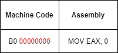
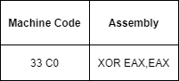
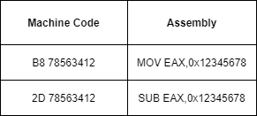

Encoding custom Shellcode/payload
Shellcodes are generally
encoded since most vulnerabilities have some form of restriction over
data that we want to overflow
Types of shellcode encoding
•
Null-free Shellcode encoding C language strings(e.g: char
string[]="AAA") are
NULL-terminated strings meaning that they work
till a
NULL, or 0 bytes is found.
If a shellcode is intended to be
injected into a target process
through null-terminated strings, this
shellcode has to be written without the use of
NULL characters \x00 (zeroes) to guarantee the execution. In fact when
shellcode that contains
NULLs is injected , the subsequent bytes of the
shellcode after the NULL character will not be processed making it incapable of running successfully
This mean that when we build a shellcode we have to avoid assembly instructions that when translated in machine code
have inside them
00 values. In fact is the machine code that we will pass as a
string and this string must not have
zeroes(NULL) characters
(\x00)!
How set EAX to
zero incorrect:  correct:  correct:  •
Alphanumeric and printable Shellcode encoding
If the target process filters out all non-alphanumeric bytes from the data, the range of instructions that can be
used to write a shellcode becomes very limited.
A solution is to use a
Self-Modifying Code
(SMC) decoder that expands the range of instructions that is possible to use and turn any code into
alphanumeric code.
The shellcode then is prepended with a
SMC decoder which on execution will
decode and execute the main body of the shellcode
Bibliography:
•
https://en.wikipedia.org/wiki/Shellcode